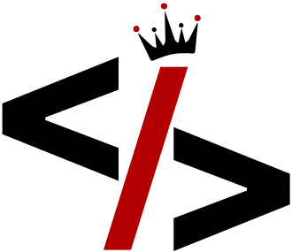

SICODER
A system-built identity for focused digital work.
SICODER is the base layer.
Everything else runs on top of it.
system_identity.sh
$
initialize --identity SICODER
>> Base layer established
>> All systems nominal
>> Ready for context selection
█
CHOOSE CONTEXT
SYIFA F.A
Professional
Structured Precision
Organized portfolio for formal review, team collaboration, and client engagement.
Structured Work
Team Ready
Documented
KAI SHI
Experimental
Raw Execution
Unfiltered workspace for builders, technical experiments, and learning processes.
Experiments
Raw Code
Learning
SYIFA F.A
KAI SHI